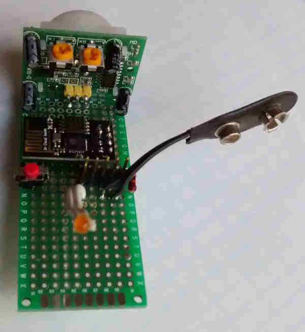
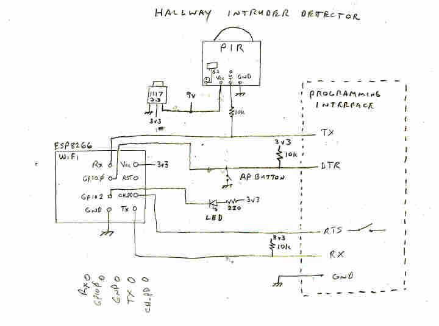
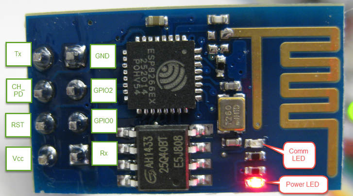
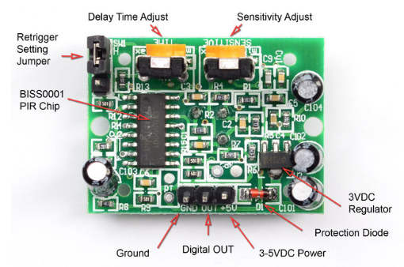

WiFi Hallway Intruder Detector Info
Here is a picture of the Hallway Intrusion Detector:

Here is a schematic of the Hallway Intrusion Detector:

Here is a picture of the WiFi board (esp8266):

Here is a picture of the PIR sensor board (your's doesn't have
the retrigger setting jumper):

Note: Some of the links below are external and will only work once you've connected to your router with the esp8266. This is done by holding the AP button down for more than 5 seconds, then connecting with ESP_* hotspot, then finally setting up connection with a router via a browser on 192.168.4.1.
- Here is the project home page with all the infomration and software WiFi-Hallway-Intruder-Detector
- Here is the pdf on the PIR sensor
- Here is more info on PIR sensors
- Here is where the PIR sensor was bought
- Here is where the WiFi module (ESP-01) was bought